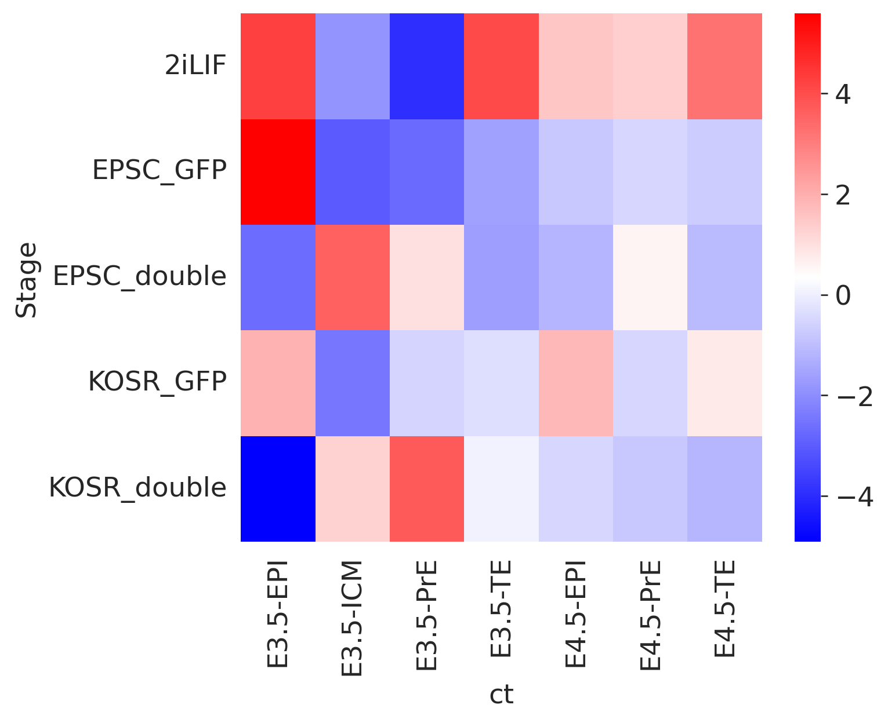

import pandas as pd
import scanpy as sc
import numpy as np
import matplotlib.pyplot as plt
import seaborn as sns
from rich import print
import warnings
# from lightning_fabric.plugins.environments.slurm import PossibleUserWarning
# warnings.simplefilter(action='ignore', category=PossibleUserWarning)
warnings.simplefilter(action='ignore', category=UserWarning)
warnings.simplefilter(action='ignore', category=FutureWarning)Atlas mapping for Redó-Riveiro et al. 2023
0.0.0.1 Changelog
25-09-2023
Integration of the dataset without TE
21-09-2023
Analysis with STARsolo based quantification
sc.settings.figdir = '../figures/'
sc.set_figure_params(dpi=120, dpi_save = 300, format='svg', transparent=True, figsize=(6,5))
sns.set_style("white")
%config InlineBackend.print_figure_kwargs={'facecolor' : "w"}
%config InlineBackend.figure_format='retina'1 Analysis with TE
1.1 Load in experimental single cell RNA-seq data
alba_adata = sc.read('../data/processed/10_dataset_v2.h5ad')sc.pl.umap(alba_adata, color=['Stage', 'leiden', 'Sox2', 'Gata6', 'Pou5f1', 'S2G6+',
'All.Events.GFP-A.Geo.Mean', 'All.Events.561D-A.Geo.Mean'], ncols=3, frameon=False)alba_adataAnnData object with n_obs × n_vars = 1139 × 21590
obs: 'Well_ID', 'Well_coordinates', 'plate_ID', 'Subject_ID', 'Amp_batch_ID', 'Cell_barcode', 'Pool_barcode', 'Batch', 'Condition', 'SampleName', 'Stage', 'Source', 'SubGroup', 'Group', 'Clone', 'All.Events.GFP-A.Geo.Mean', 'All.Events.561D-A.Geo.Mean', 'n_genes_by_counts', 'total_counts', 'total_counts_mt', 'pct_counts_mt', 'total_counts_ercc', 'pct_counts_ercc', 'total_counts_ribo', 'pct_counts_ribo', 'n_genes', 'n_counts', 'leiden', 'S_score', 'G2M_score', 'phase', 'S2G6+'
var: 'gene_ids', 'feature_types', 'mt', 'ercc', 'ribo', 'n_cells_by_counts', 'mean_counts', 'pct_dropout_by_counts', 'total_counts', 'n_cells', 'highly_variable', 'means', 'dispersions', 'dispersions_norm', 'highly_variable_nbatches', 'highly_variable_intersection', 'mean', 'std'
uns: 'Amp_batch_ID_colors', 'S2G6+_colors', 'Stage_colors', 'dendrogram_Stage', 'hvg', 'leiden', 'leiden_colors', 'log1p', 'neighbors', 'pca', 'plate_ID_colors', 'rank_genes_groups', 'umap'
obsm: 'X_pca', 'X_umap'
varm: 'PCs'
layers: 'counts'
obsp: 'connectivities', 'distances'1.2 Load and preprocess the Nowotschin dataset
nowo = sc.read("../data/external/Nowotschin_et_al_2019/sc_endoderm_all_cells.h5ad")
meta = pd.read_csv("../data/external/Nowotschin_et_al_2019/e35_cell_types.csv", index_col=0)
nowo.obs.loc[meta.index, 'CellType'] = meta.CellType
nowo = nowo[
nowo.obs.Timepoint.isin(['E3.5', 'E4.5'])
].copy()
nowo.obs['batch'] = "NOWO_1"
nowo.obs['experiment'] = "Nowotschin et al., 2019"
nowo.obs['technology'] = "10X 3' v2"
nowo.obs['ct'] = nowo.obs[['Timepoint', 'CellType']].agg('-'.join, axis=1)
nowo.obs['ct_orig'] = nowo.obs.CellType
nowo.obs = nowo.obs[['batch', 'experiment', 'technology', 'ct', 'ct_orig']]
nowo.var_names = nowo.var_names.str.lower()
sc.pp.filter_cells(nowo, min_counts=10)
sc.pp.filter_cells(nowo, min_genes=10)
nowo.layers["counts"] = nowo.X.copy()
sc.pp.normalize_total(nowo, target_sum=10_000)
sc.pp.log1p(nowo)
nowo.raw = nowosc.pp.highly_variable_genes(
nowo,
flavor="seurat_v3",
n_top_genes=1_000,
layer="counts",
batch_key="batch",
min_mean=0.0125, max_mean=10, min_disp=0.5,
subset=True,
)
sc.pp.pca(nowo)
sc.pp.neighbors(nowo)
sc.tl.umap(nowo)/projects/dan1/data/Brickman/conda/envs/scvi-1.0.0/lib/python3.10/site-packages/umap/distances.py:1063: NumbaDeprecationWarning: The 'nopython' keyword argument was not supplied to the 'numba.jit' decorator. The implicit default value for this argument is currently False, but it will be changed to True in Numba 0.59.0. See https://numba.readthedocs.io/en/stable/reference/deprecation.html#deprecation-of-object-mode-fall-back-behaviour-when-using-jit for details.
@numba.jit()
/projects/dan1/data/Brickman/conda/envs/scvi-1.0.0/lib/python3.10/site-packages/umap/distances.py:1071: NumbaDeprecationWarning: The 'nopython' keyword argument was not supplied to the 'numba.jit' decorator. The implicit default value for this argument is currently False, but it will be changed to True in Numba 0.59.0. See https://numba.readthedocs.io/en/stable/reference/deprecation.html#deprecation-of-object-mode-fall-back-behaviour-when-using-jit for details.
@numba.jit()
/projects/dan1/data/Brickman/conda/envs/scvi-1.0.0/lib/python3.10/site-packages/umap/distances.py:1086: NumbaDeprecationWarning: The 'nopython' keyword argument was not supplied to the 'numba.jit' decorator. The implicit default value for this argument is currently False, but it will be changed to True in Numba 0.59.0. See https://numba.readthedocs.io/en/stable/reference/deprecation.html#deprecation-of-object-mode-fall-back-behaviour-when-using-jit for details.
@numba.jit()
/projects/dan1/data/Brickman/conda/envs/scvi-1.0.0/lib/python3.10/site-packages/tqdm/auto.py:21: TqdmWarning: IProgress not found. Please update jupyter and ipywidgets. See https://ipywidgets.readthedocs.io/en/stable/user_install.html
from .autonotebook import tqdm as notebook_tqdm
/projects/dan1/data/Brickman/conda/envs/scvi-1.0.0/lib/python3.10/site-packages/umap/umap_.py:660: NumbaDeprecationWarning: The 'nopython' keyword argument was not supplied to the 'numba.jit' decorator. The implicit default value for this argument is currently False, but it will be changed to True in Numba 0.59.0. See https://numba.readthedocs.io/en/stable/reference/deprecation.html#deprecation-of-object-mode-fall-back-behaviour-when-using-jit for details.
@numba.jit()
2023-10-23 16:33:03.432403: I tensorflow/core/util/port.cc:110] oneDNN custom operations are on. You may see slightly different numerical results due to floating-point round-off errors from different computation orders. To turn them off, set the environment variable `TF_ENABLE_ONEDNN_OPTS=0`.
2023-10-23 16:33:03.482766: I tensorflow/core/platform/cpu_feature_guard.cc:182] This TensorFlow binary is optimized to use available CPU instructions in performance-critical operations.
To enable the following instructions: AVX2 AVX512F AVX512_VNNI FMA, in other operations, rebuild TensorFlow with the appropriate compiler flags.
2023-10-23 16:33:04.693881: W tensorflow/compiler/tf2tensorrt/utils/py_utils.cc:38] TF-TRT Warning: Could not find TensorRT1.2.1 Sanity plots for Nowotschin dataset
sc.pl.umap(
nowo,
color=["ct"],
frameon=False,
ncols=1,
save="_integration_01_Nowotschin_only-with_TE-UMAP.svg"
)WARNING: saving figure to file ../figures/umap_integration_01_Nowotschin_only-with_TE-UMAP.svgsc.pl.pca(
nowo,
color=["ct"],
frameon=False,
ncols=1,
dimensions=[(0, 1)],
save="_integration_02_Nowotschin_only-with_TE-PCA.svg"
)WARNING: saving figure to file ../figures/pca_integration_02_Nowotschin_only-with_TE-PCA.svgnowo = nowo[:, nowo.var.highly_variable].copy()
sc.pp.scale(nowo, max_value=10)1.2.2 Map experimental dataset onto altas (Nowotschin) dataset
nowo.var_names = nowo.var_names.str.upper()
alba_adata.var_names = alba_adata.var_names.str.upper()
var_names = nowo.var_names.intersection(alba_adata.var_names)
nowo = nowo[:, var_names].copy()
alba_adata = alba_adata[:, var_names].copy()sc.tl.ingest(alba_adata, nowo, obs = 'ct')adata_concat = nowo.concatenate(alba_adata, batch_categories=['nowo', 'alba'])adata_concatAnnData object with n_obs × n_vars = 2145 × 919
obs: 'batch', 'experiment', 'technology', 'ct', 'ct_orig', 'n_counts', 'n_genes', 'Well_ID', 'Well_coordinates', 'plate_ID', 'Subject_ID', 'Amp_batch_ID', 'Cell_barcode', 'Pool_barcode', 'Batch', 'Condition', 'SampleName', 'Stage', 'Source', 'SubGroup', 'Group', 'Clone', 'All.Events.GFP-A.Geo.Mean', 'All.Events.561D-A.Geo.Mean', 'n_genes_by_counts', 'total_counts', 'total_counts_mt', 'pct_counts_mt', 'total_counts_ercc', 'pct_counts_ercc', 'total_counts_ribo', 'pct_counts_ribo', 'leiden', 'S_score', 'G2M_score', 'phase', 'S2G6+'
var: 'highly_variable-alba', 'means-alba', 'highly_variable_nbatches-alba', 'mean-alba', 'std-alba', 'gene_ids-alba', 'feature_types-alba', 'mt-alba', 'ercc-alba', 'ribo-alba', 'n_cells_by_counts-alba', 'mean_counts-alba', 'pct_dropout_by_counts-alba', 'total_counts-alba', 'n_cells-alba', 'dispersions-alba', 'dispersions_norm-alba', 'highly_variable_intersection-alba', 'highly_variable-nowo', 'highly_variable_rank-nowo', 'means-nowo', 'variances-nowo', 'variances_norm-nowo', 'highly_variable_nbatches-nowo', 'mean-nowo', 'std-nowo'
obsm: 'X_pca', 'X_umap'
layers: 'counts'alba_annotated = adata_concat[adata_concat.obs.batch == 'alba']alba_annotatedView of AnnData object with n_obs × n_vars = 1139 × 919
obs: 'batch', 'experiment', 'technology', 'ct', 'ct_orig', 'n_counts', 'n_genes', 'Well_ID', 'Well_coordinates', 'plate_ID', 'Subject_ID', 'Amp_batch_ID', 'Cell_barcode', 'Pool_barcode', 'Batch', 'Condition', 'SampleName', 'Stage', 'Source', 'SubGroup', 'Group', 'Clone', 'All.Events.GFP-A.Geo.Mean', 'All.Events.561D-A.Geo.Mean', 'n_genes_by_counts', 'total_counts', 'total_counts_mt', 'pct_counts_mt', 'total_counts_ercc', 'pct_counts_ercc', 'total_counts_ribo', 'pct_counts_ribo', 'leiden', 'S_score', 'G2M_score', 'phase', 'S2G6+'
var: 'highly_variable-alba', 'means-alba', 'highly_variable_nbatches-alba', 'mean-alba', 'std-alba', 'gene_ids-alba', 'feature_types-alba', 'mt-alba', 'ercc-alba', 'ribo-alba', 'n_cells_by_counts-alba', 'mean_counts-alba', 'pct_dropout_by_counts-alba', 'total_counts-alba', 'n_cells-alba', 'dispersions-alba', 'dispersions_norm-alba', 'highly_variable_intersection-alba', 'highly_variable-nowo', 'highly_variable_rank-nowo', 'means-nowo', 'variances-nowo', 'variances_norm-nowo', 'highly_variable_nbatches-nowo', 'mean-nowo', 'std-nowo'
obsm: 'X_pca', 'X_umap'
layers: 'counts'pd.crosstab(alba_annotated.obs.Stage, alba_annotated.obs.ct)| ct | E3.5-EPI | E3.5-ICM | E3.5-PrE | E3.5-TE | E4.5-EPI | E4.5-PrE | E4.5-TE |
|---|---|---|---|---|---|---|---|
| Stage | |||||||
| 2iLIF | 90 | 12 | 45 | 10 | 2 | 1 | 3 |
| EPSC_GFP | 90 | 5 | 47 | 0 | 0 | 0 | 0 |
| EPSC_double | 87 | 64 | 173 | 2 | 0 | 1 | 0 |
| KOSR_GFP | 62 | 7 | 63 | 2 | 2 | 0 | 1 |
| KOSR_double | 75 | 55 | 232 | 7 | 1 | 0 | 0 |
pd.crosstab(alba_adata.obs.Stage, alba_adata.obs.leiden)| leiden | 0 | 1 | 2 | 3 |
|---|---|---|---|---|
| Stage | ||||
| 2iLIF | 0 | 1 | 0 | 162 |
| EPSC_GFP | 1 | 141 | 0 | 0 |
| EPSC_double | 114 | 213 | 0 | 0 |
| KOSR_GFP | 6 | 0 | 128 | 3 |
| KOSR_double | 310 | 3 | 56 | 1 |
ax = sns.heatmap(sc.metrics.confusion_matrix("Stage", "leiden", alba_annotated.obs), cmap=sns.dark_palette("white", reverse=True, as_cmap=True),linewidth=.5)
fig = ax.get_figure()
fig.savefig(f'{sc.settings.figdir}/crosstab_01_Stage_vs_Leiden_cluster.svg')
alba_annotated.obs.Stage.value_counts()KOSR_double 370
EPSC_double 327
2iLIF 163
EPSC_GFP 142
KOSR_GFP 137
Name: Stage, dtype: int64alba_annotated_df=pd.DataFrame({
'condition':alba_annotated.obs.Stage,
'annotation':alba_annotated.obs.ct,
})proportions_df = pd.crosstab(alba_annotated.obs.Stage,alba_annotated.obs.ct, normalize='index')proportions_df_notNorm = pd.crosstab(alba_annotated.obs.Stage,alba_annotated.obs.ct)ax = proportions_df.plot.barh(
stacked=True,
grid=False,
)
fig = ax.get_figure()
fig.savefig(f'{sc.settings.figdir}/integration_03_CellProportions_Integrated_with-TE.svg')proportions_of_clusters_df = pd.crosstab(alba_annotated.obs.leiden, alba_annotated.obs.ct, normalize='index')
proportions_of_clusters_df_notNorm = pd.crosstab(alba_annotated.obs.leiden, alba_annotated.obs.ct)ax = proportions_of_clusters_df.plot.barh(
stacked=True,
grid=False,
)
fig = ax.get_figure()
fig.savefig(f'{sc.settings.figdir}/integration_04_CellProportionsLeidenClusters_Integrated_with-TE.svg')1.3 Contingency table analysis
import scipy.stats as statsstats.chi2_contingency(proportions_df_notNorm)Chi2ContingencyResult(statistic=201.78632492668822, pvalue=4.715612624607903e-30, dof=24, expected_freq=array([[ 57.81562774, 20.46444249, 80.1404741 , 3.00526778,
0.71553995, 0.28621598, 0.57243196],
[ 50.36698859, 17.82791923, 69.81562774, 2.61808604,
0.62335382, 0.24934153, 0.49868306],
[115.98595259, 41.05443371, 160.77260755, 6.02897278,
1.43546971, 0.57418788, 1.14837577],
[ 48.59350307, 17.20017559, 67.35733099, 2.52589991,
0.60140474, 0.2405619 , 0.48112379],
[131.23792801, 46.45302897, 181.91395961, 6.82177349,
1.62423178, 0.64969271, 1.29938543]]))alba_chi2 = stats.chi2_contingency(proportions_df_notNorm)alba_chi2Chi2ContingencyResult(statistic=201.78632492668822, pvalue=4.715612624607903e-30, dof=24, expected_freq=array([[ 57.81562774, 20.46444249, 80.1404741 , 3.00526778,
0.71553995, 0.28621598, 0.57243196],
[ 50.36698859, 17.82791923, 69.81562774, 2.61808604,
0.62335382, 0.24934153, 0.49868306],
[115.98595259, 41.05443371, 160.77260755, 6.02897278,
1.43546971, 0.57418788, 1.14837577],
[ 48.59350307, 17.20017559, 67.35733099, 2.52589991,
0.60140474, 0.2405619 , 0.48112379],
[131.23792801, 46.45302897, 181.91395961, 6.82177349,
1.62423178, 0.64969271, 1.29938543]]))alba_chi2.pvalue4.715612624607903e-30alba_chi2.statistic201.78632492668822# https://stackoverflow.com/questions/20453729/what-is-the-equivalent-of-r-data-chisqresiduals-in-python
from scipy.stats.contingency import margins
def residuals(observed, expected):
return (observed - expected) / np.sqrt(expected)
def stdres(observed, expected):
n = observed.sum()
rsum, csum = margins(observed)
# With integers, the calculation
# csum * rsum * (n - rsum) * (n - csum)
# might overflow, so convert rsum and csum to floating point.
rsum = rsum.astype(np.float64)
csum = csum.astype(np.float64)
v = csum * rsum * (n - rsum) * (n - csum) / n**3
return (observed - expected) / np.sqrt(v)sns.set_style("dark")ax = sns.heatmap(
pd.DataFrame(stdres(proportions_df_notNorm.to_numpy(), alba_chi2.expected_freq), columns= proportions_df_notNorm.columns, index=proportions_df_notNorm.index),
cmap='bwr'
)
fig = ax.get_figure()
fig.savefig(f'{sc.settings.figdir}/integration_05_ChiSquared_NormalisedResiduals-withTE.svg')ax = sns.heatmap(
pd.DataFrame(residuals(proportions_df_notNorm.to_numpy(), alba_chi2.expected_freq), columns= proportions_df_notNorm.columns, index=proportions_df_notNorm.index),
cmap='bwr'
)
fig = ax.get_figure()
fig.savefig(f'{sc.settings.figdir}/integration_06_ChiSquared_RawResiduals-withTE.svg')
1.3.1 Significance tests using clusters
stats.chi2_contingency(proportions_of_clusters_df_notNorm)Chi2ContingencyResult(statistic=196.4951224929756, pvalue=5.025159340654328e-32, dof=18, expected_freq=array([[152.87445127, 54.11150132, 211.90517998, 7.94644425,
1.89201054, 0.75680421, 1.51360843],
[126.98156277, 44.94644425, 176.01404741, 6.60052678,
1.57155399, 0.6286216 , 1.2572432 ],
[ 65.2642669 , 23.10096576, 90.46532046, 3.39244952,
0.80772608, 0.32309043, 0.64618086],
[ 58.87971905, 20.84108867, 81.61545215, 3.06057946,
0.72870939, 0.29148376, 0.58296752]]))seurat_clusters_chi2 = stats.chi2_contingency(proportions_of_clusters_df_notNorm)seurat_clusters_chi2.pvalue5.025159340654328e-32seurat_clusters_chi2.statistic196.4951224929756ax = sns.heatmap(
pd.DataFrame(stdres(proportions_of_clusters_df_notNorm.to_numpy(), seurat_clusters_chi2.expected_freq), columns= proportions_of_clusters_df_notNorm.columns, index=proportions_of_clusters_df_notNorm.index),
cmap='bwr', center = 0.0
)
fig = ax.get_figure()
fig.savefig(f'{sc.settings.figdir}/integration_07_LeidenClusters_ChiSquared_NormalisedResiduals-withTE.svg')ax = sns.heatmap(
pd.DataFrame(residuals(proportions_of_clusters_df_notNorm.to_numpy(), seurat_clusters_chi2.expected_freq), columns= proportions_of_clusters_df_notNorm.columns, index=proportions_of_clusters_df_notNorm.index),
cmap='bwr', center = 0.0
)
fig = ax.get_figure()
fig.savefig(f'{sc.settings.figdir}/integration_08_LeidenClusters_ChiSquared_RawResiduals-withTE.svg')sc.pl.pca(adata_concat,
color=['batch', 'ct', 'Stage', 'leiden'],
frameon=False,
ncols=1,)sc.pl.umap(adata_concat,
color=['batch', 'ct', 'Stage'],
ncols = 1,
frameon=False,
save="_integration_09_UMAP_integrated_withTE.svg",
)WARNING: saving figure to file ../figures/umap_integration_09_UMAP_integrated_withTE.svgsc.pl.pca(adata_concat,
color=['batch', 'ct', 'Stage'],
frameon=False,
ncols=1,
save="_integration_10_PCA_integrated_withTE.svg",
)WARNING: saving figure to file ../figures/pca_integration_10_PCA_integrated_withTE.svg2 Analysis without TE
It appears the majority of cells map to ICM, EPI, PE labels. The follow up analysis excludes the trophectoderm (TE) populations to allow for greater resolution.
Load in the Nowotschin et al. dataset, but this time, exclude cells labelled as TE
nowo = sc.read("../data/external/Nowotschin_et_al_2019/sc_endoderm_all_cells.h5ad")
meta = pd.read_csv("../data/external/Nowotschin_et_al_2019/e35_cell_types.csv", index_col=0)
nowo.obs.loc[meta.index, 'CellType'] = meta.CellType
nowo = nowo[
nowo.obs.Timepoint.isin(['E3.5', 'E4.5']) & nowo.obs.CellType.isin(['EPI','ICM','PrE'])
].copy()
nowo.obs['batch'] = "NOWO_1"
nowo.obs['experiment'] = "Nowotschin et al., 2019"
nowo.obs['technology'] = "10X 3' v2"
nowo.obs['ct'] = nowo.obs[['Timepoint', 'CellType']].agg('-'.join, axis=1)
nowo.obs['ct_orig'] = nowo.obs.CellType
nowo.obs = nowo.obs[['batch', 'experiment', 'technology', 'ct', 'ct_orig']]
nowo.var_names = nowo.var_names.str.lower()
sc.pp.filter_cells(nowo, min_counts=10)
sc.pp.filter_cells(nowo, min_genes=10)
nowo.layers["counts"] = nowo.X.copy()
sc.pp.normalize_total(nowo, target_sum=10_000)
sc.pp.log1p(nowo)
nowo.raw = nowosc.pp.highly_variable_genes(
nowo,
flavor="seurat_v3",
n_top_genes=1_000,
layer="counts",
batch_key="batch",
min_mean=0.0125, max_mean=10, min_disp=0.5,
subset=True,
)
sc.pp.pca(nowo)
sc.pp.neighbors(nowo)
sc.tl.umap(nowo)nowo = nowo[:, nowo.var.highly_variable].copy()
sc.pp.scale(nowo, max_value=10)2.1 Load in experimental single cell RNA-seq data
alba_adata = sc.read('../data/processed/10_dataset_v2.h5ad')alba_adataAnnData object with n_obs × n_vars = 1139 × 21590
obs: 'Well_ID', 'Well_coordinates', 'plate_ID', 'Subject_ID', 'Amp_batch_ID', 'Cell_barcode', 'Pool_barcode', 'Batch', 'Condition', 'SampleName', 'Stage', 'Source', 'SubGroup', 'Group', 'Clone', 'All.Events.GFP-A.Geo.Mean', 'All.Events.561D-A.Geo.Mean', 'n_genes_by_counts', 'total_counts', 'total_counts_mt', 'pct_counts_mt', 'total_counts_ercc', 'pct_counts_ercc', 'total_counts_ribo', 'pct_counts_ribo', 'n_genes', 'n_counts', 'leiden', 'S_score', 'G2M_score', 'phase', 'S2G6+'
var: 'gene_ids', 'feature_types', 'mt', 'ercc', 'ribo', 'n_cells_by_counts', 'mean_counts', 'pct_dropout_by_counts', 'total_counts', 'n_cells', 'highly_variable', 'means', 'dispersions', 'dispersions_norm', 'highly_variable_nbatches', 'highly_variable_intersection', 'mean', 'std'
uns: 'Amp_batch_ID_colors', 'S2G6+_colors', 'Stage_colors', 'dendrogram_Stage', 'hvg', 'leiden', 'leiden_colors', 'log1p', 'neighbors', 'pca', 'plate_ID_colors', 'rank_genes_groups', 'umap'
obsm: 'X_pca', 'X_umap'
varm: 'PCs'
layers: 'counts'
obsp: 'connectivities', 'distances'2.1.1 Map experimental data onto filtered atlas
nowo.var_names = nowo.var_names.str.upper()
alba_adata.var_names = alba_adata.var_names.str.upper()
var_names = nowo.var_names.intersection(alba_adata.var_names)
nowo = nowo[:, var_names].copy()
alba_adata = alba_adata[:, var_names].copy()sc.tl.ingest(alba_adata, nowo, obs = 'ct')adata_concat = nowo.concatenate(alba_adata, batch_categories=['nowo', 'alba'])adata_concatAnnData object with n_obs × n_vars = 2041 × 917
obs: 'batch', 'experiment', 'technology', 'ct', 'ct_orig', 'n_counts', 'n_genes', 'Well_ID', 'Well_coordinates', 'plate_ID', 'Subject_ID', 'Amp_batch_ID', 'Cell_barcode', 'Pool_barcode', 'Batch', 'Condition', 'SampleName', 'Stage', 'Source', 'SubGroup', 'Group', 'Clone', 'All.Events.GFP-A.Geo.Mean', 'All.Events.561D-A.Geo.Mean', 'n_genes_by_counts', 'total_counts', 'total_counts_mt', 'pct_counts_mt', 'total_counts_ercc', 'pct_counts_ercc', 'total_counts_ribo', 'pct_counts_ribo', 'leiden', 'S_score', 'G2M_score', 'phase', 'S2G6+'
var: 'highly_variable-alba', 'means-alba', 'highly_variable_nbatches-alba', 'mean-alba', 'std-alba', 'gene_ids-alba', 'feature_types-alba', 'mt-alba', 'ercc-alba', 'ribo-alba', 'n_cells_by_counts-alba', 'mean_counts-alba', 'pct_dropout_by_counts-alba', 'total_counts-alba', 'n_cells-alba', 'dispersions-alba', 'dispersions_norm-alba', 'highly_variable_intersection-alba', 'highly_variable-nowo', 'highly_variable_rank-nowo', 'means-nowo', 'variances-nowo', 'variances_norm-nowo', 'highly_variable_nbatches-nowo', 'mean-nowo', 'std-nowo'
obsm: 'X_pca', 'X_umap'
layers: 'counts'alba_annotated = adata_concat[adata_concat.obs.batch == 'alba']alba_annotatedView of AnnData object with n_obs × n_vars = 1139 × 917
obs: 'batch', 'experiment', 'technology', 'ct', 'ct_orig', 'n_counts', 'n_genes', 'Well_ID', 'Well_coordinates', 'plate_ID', 'Subject_ID', 'Amp_batch_ID', 'Cell_barcode', 'Pool_barcode', 'Batch', 'Condition', 'SampleName', 'Stage', 'Source', 'SubGroup', 'Group', 'Clone', 'All.Events.GFP-A.Geo.Mean', 'All.Events.561D-A.Geo.Mean', 'n_genes_by_counts', 'total_counts', 'total_counts_mt', 'pct_counts_mt', 'total_counts_ercc', 'pct_counts_ercc', 'total_counts_ribo', 'pct_counts_ribo', 'leiden', 'S_score', 'G2M_score', 'phase', 'S2G6+'
var: 'highly_variable-alba', 'means-alba', 'highly_variable_nbatches-alba', 'mean-alba', 'std-alba', 'gene_ids-alba', 'feature_types-alba', 'mt-alba', 'ercc-alba', 'ribo-alba', 'n_cells_by_counts-alba', 'mean_counts-alba', 'pct_dropout_by_counts-alba', 'total_counts-alba', 'n_cells-alba', 'dispersions-alba', 'dispersions_norm-alba', 'highly_variable_intersection-alba', 'highly_variable-nowo', 'highly_variable_rank-nowo', 'means-nowo', 'variances-nowo', 'variances_norm-nowo', 'highly_variable_nbatches-nowo', 'mean-nowo', 'std-nowo'
obsm: 'X_pca', 'X_umap'
layers: 'counts'pd.crosstab(alba_annotated.obs.Stage, alba_annotated.obs.ct)| ct | E3.5-EPI | E3.5-ICM | E3.5-PrE | E4.5-EPI | E4.5-PrE |
|---|---|---|---|---|---|
| Stage | |||||
| 2iLIF | 93 | 12 | 54 | 3 | 1 |
| EPSC_GFP | 87 | 7 | 47 | 0 | 1 |
| EPSC_double | 89 | 48 | 189 | 0 | 1 |
| KOSR_GFP | 64 | 4 | 65 | 4 | 0 |
| KOSR_double | 75 | 46 | 248 | 1 | 0 |
alba_annotated.obs.Stage.value_counts()KOSR_double 370
EPSC_double 327
2iLIF 163
EPSC_GFP 142
KOSR_GFP 137
Name: Stage, dtype: int64alba_annotated_df=pd.DataFrame({
'condition':alba_annotated.obs.Stage,
'annotation':alba_annotated.obs.ct,
})proportions_df = pd.crosstab(alba_annotated.obs.Stage,alba_annotated.obs.ct, normalize='index')proportions_df_notNorm = pd.crosstab(alba_annotated.obs.Stage,alba_annotated.obs.ct)ax = proportions_df.plot.barh(
stacked=True,
grid=False,
)
fig = ax.get_figure()
fig.savefig(f'{sc.settings.figdir}/integration_11_CellProportions_Integrated_without-TE.svg')proportions_of_clusters_df = pd.crosstab(alba_annotated.obs.leiden, alba_annotated.obs.ct, normalize='index')
proportions_of_clusters_df_notNorm = pd.crosstab(alba_annotated.obs.leiden, alba_annotated.obs.ct)ax = proportions_of_clusters_df.plot.barh(
stacked=True,
grid=False,
)
fig = ax.get_figure()
fig.savefig(f'{sc.settings.figdir}/integration_12_CellProportionsLeidenClusters_Integrated_without-TE.svg')2.2 Contingency table analysis
import scipy.stats as statsstats.chi2_contingency(proportions_df_notNorm)Chi2ContingencyResult(statistic=161.6138042752549, pvalue=3.931212702862735e-26, dof=16, expected_freq=array([[ 58.3880597 , 16.74363477, 86.29411765, 1.14486392,
0.42932397],
[ 50.86567164, 14.58647937, 75.17647059, 0.99736611,
0.37401229],
[117.13432836, 33.58999122, 173.11764706, 2.29675154,
0.86128183],
[ 49.07462687, 14.07287094, 72.52941176, 0.96224759,
0.36084284],
[132.53731343, 38.00702371, 195.88235294, 2.59877085,
0.97453907]]))alba_chi2 = stats.chi2_contingency(proportions_df_notNorm)alba_chi2.pvalue3.931212702862735e-26alba_chi2.statistic161.6138042752549# https://stackoverflow.com/questions/20453729/what-is-the-equivalent-of-r-data-chisqresiduals-in-python
from scipy.stats.contingency import margins
def residuals(observed, expected):
return (observed - expected) / np.sqrt(expected)
def stdres(observed, expected):
n = observed.sum()
rsum, csum = margins(observed)
# With integers, the calculation
# csum * rsum * (n - rsum) * (n - csum)
# might overflow, so convert rsum and csum to floating point.
rsum = rsum.astype(np.float64)
csum = csum.astype(np.float64)
v = csum * rsum * (n - rsum) * (n - csum) / n**3
return (observed - expected) / np.sqrt(v)ax = sns.heatmap(
pd.DataFrame(stdres(proportions_df_notNorm.to_numpy(), alba_chi2.expected_freq), columns= proportions_df_notNorm.columns, index=proportions_df_notNorm.index),
cmap='bwr'
)
fig = ax.get_figure()
fig.savefig(f'{sc.settings.figdir}/integration_13_ChiSquared_NormalisedResiduals-withoutTE.svg')ax = sns.heatmap(
pd.DataFrame(residuals(proportions_df_notNorm.to_numpy(), alba_chi2.expected_freq), columns= proportions_df_notNorm.columns, index=proportions_df_notNorm.index),
cmap='bwr'
)
fig = ax.get_figure()
fig.savefig(f'{sc.settings.figdir}/integration_14_ChiSquared_RawResiduals-withoutTE.svg')2.2.1 Significance tests using clusters
stats.chi2_contingency(proportions_of_clusters_df_notNorm)Chi2ContingencyResult(statistic=144.80555129331256, pvalue=6.398572999546904e-25, dof=12, expected_freq=array([[154.3880597 , 44.27304653, 228.17647059, 3.02721686,
1.13520632],
[128.23880597, 36.77436348, 189.52941176, 2.51448639,
0.9429324 ],
[ 65.91044776, 18.90079017, 97.41176471, 1.29236172,
0.48463565],
[ 59.46268657, 17.05179982, 87.88235294, 1.16593503,
0.43722564]]))seurat_clusters_chi2 = stats.chi2_contingency(proportions_of_clusters_df_notNorm)seurat_clusters_chi2.pvalue6.398572999546904e-25seurat_clusters_chi2.statistic144.80555129331256ax = sns.heatmap(
pd.DataFrame(stdres(proportions_of_clusters_df_notNorm.to_numpy(), seurat_clusters_chi2.expected_freq), columns= proportions_of_clusters_df_notNorm.columns, index=proportions_of_clusters_df_notNorm.index),
cmap='bwr', center = 0.0
)
fig = ax.get_figure()
fig.savefig(f'{sc.settings.figdir}/integration_15_LeidenClusters_ChiSquared_NormalisedResiduals-withoutTE.svg')ax = sns.heatmap(
pd.DataFrame(residuals(proportions_of_clusters_df_notNorm.to_numpy(), seurat_clusters_chi2.expected_freq), columns= proportions_of_clusters_df_notNorm.columns, index=proportions_of_clusters_df_notNorm.index),
cmap='bwr', center = 0.0
)
fig = ax.get_figure()
fig.savefig(f'{sc.settings.figdir}/integration_16_LeidenClusters_ChiSquared_RawResiduals-withoutTE.svg')sc.pl.pca(adata_concat,
color=['batch', 'ct', 'Stage', 'leiden'],
frameon=False,
ncols=1,)sc.pl.umap(adata_concat,
color=['batch', 'ct', 'Stage'],
ncols = 1,
frameon=False,
save="_integration_17_UMAP_integrated_withoutTE.svg",
)WARNING: saving figure to file ../figures/umap_integration_17_UMAP_integrated_withoutTE.svgsc.pl.pca(adata_concat,
color=['batch', 'ct', 'Stage'],
frameon=False,
ncols=1,
save="_integration_18_PCA_integrated_withoutTE.svg",
)WARNING: saving figure to file ../figures/pca_integration_18_PCA_integrated_withoutTE.svg3 Session information
import session_info
session_info.show()Click to view session information
----- anndata 0.9.1 matplotlib 3.7.1 numpy 1.23.5 pandas 1.5.3 rich NA scanpy 1.9.3 scipy 1.10.1 seaborn 0.11.2 session_info 1.0.0 -----
Click to view modules imported as dependencies
PIL 9.5.0 aa8f2297d25b4dc6fd3d98411eb3ba53823c4f42 NA absl NA asttokens NA astunparse 1.6.3 attr 23.1.0 backcall 0.2.0 certifi 2023.05.07 cffi 1.15.1 charset_normalizer 3.1.0 cloudpickle 2.2.1 comm 0.1.3 cycler 0.10.0 cython_runtime NA dateutil 2.8.2 debugpy 1.6.7 decorator 5.1.1 defusedxml 0.7.1 etils 1.3.0 executing 1.2.0 flatbuffers 23.5.26 fsspec 2023.6.0 gast NA google NA h5py 3.9.0 idna 3.4 igraph 0.10.4 importlib_resources NA ipykernel 6.23.2 jax 0.4.13 jaxlib 0.4.13 jedi 0.18.2 joblib 1.2.0 keras 2.12.0 kiwisolver 1.4.4 leidenalg 0.9.1 llvmlite 0.40.1 matplotlib_inline 0.1.6 ml_dtypes 0.2.0 mpl_toolkits NA mpmath 1.3.0 natsort 8.4.0 numba 0.57.1 numexpr 2.8.4 nvfuser NA opt_einsum v3.3.0 packaging 23.1 parso 0.8.3 patsy 0.5.3 pexpect 4.8.0 pickleshare 0.7.5 pkg_resources NA platformdirs 3.8.0 plotly 5.15.0 prompt_toolkit 3.0.38 psutil 5.9.5 ptyprocess 0.7.0 pure_eval 0.2.2 pyarrow 12.0.1 pycparser 2.21 pydev_ipython NA pydevconsole NA pydevd 2.9.5 pydevd_file_utils NA pydevd_plugins NA pydevd_tracing NA pygments 2.15.1 pynndescent 0.5.10 pyparsing 3.1.0 pytz 2023.3 requests 2.31.0 setuptools 67.7.2 six 1.16.0 sklearn 1.2.2 skmisc 0.2.0 sparse 0.14.0 stack_data 0.6.2 statsmodels 0.14.0 sympy 1.12 tensorboard 2.12.3 tensorflow 2.12.0 termcolor NA texttable 1.6.7 threadpoolctl 3.1.0 torch 2.0.1+cu117 tornado 6.3.2 tqdm 4.65.0 traitlets 5.9.0 typing_extensions NA umap 0.5.3 urllib3 1.26.16 wcwidth 0.2.6 wrapt 1.14.1 yaml 6.0 zmq 25.1.0 zoneinfo NA
----- IPython 8.14.0 jupyter_client 8.2.0 jupyter_core 5.3.1 ----- Python 3.10.11 | packaged by conda-forge | (main, May 10 2023, 18:58:44) [GCC 11.3.0] Linux-4.18.0-477.27.1.el8_8.x86_64-x86_64-with-glibc2.28 ----- Session information updated at 2023-10-23 16:34